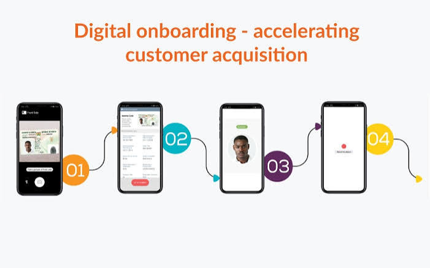

Otimização do Fluxo de Onboarding Digital

Contexto:
Case de Product Analytics e Lean Six Sigma voltado à otimização de uma jornada de onboarding digital, com foco em reduzir atritos no processo de validação de identidade e melhorar a conversão da etapa.
Abordagem:
Mapeamento da jornada, análise de funil, identificação de causas-raiz, matriz de esforço versus impacto, testes estatísticos, simulação de impacto financeiro e acompanhamento por indicadores.